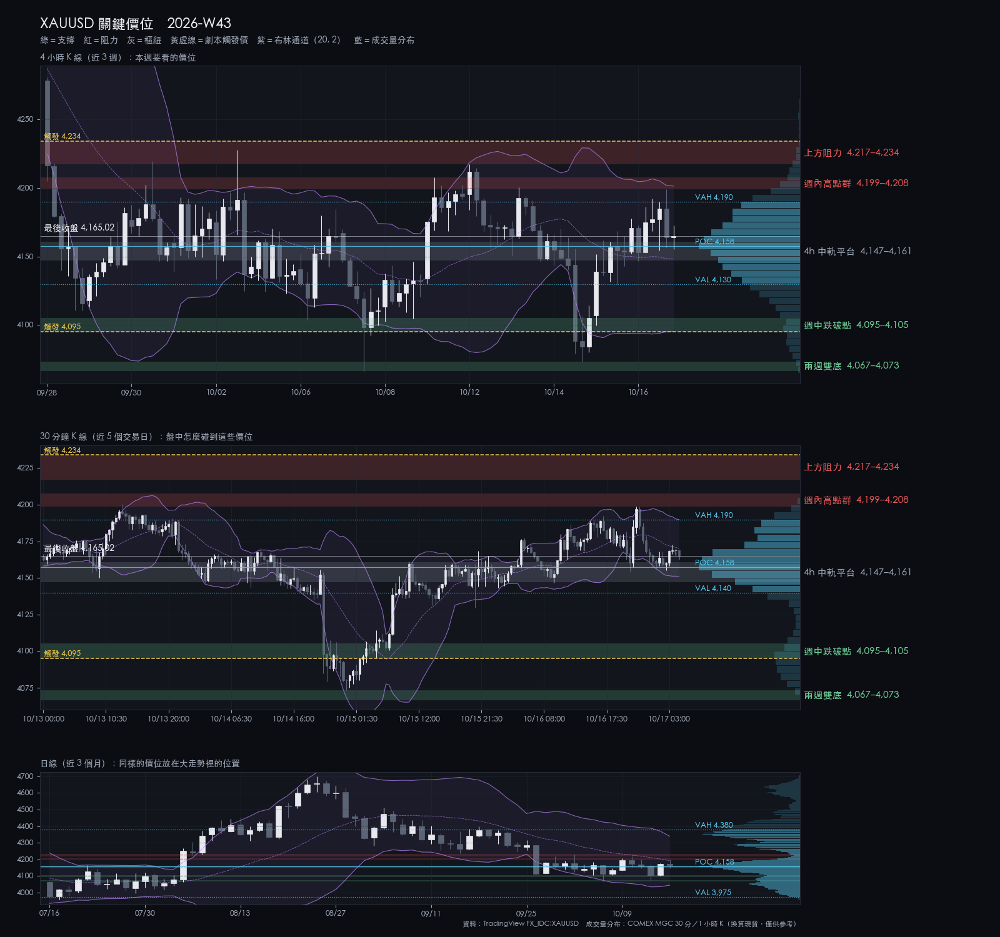
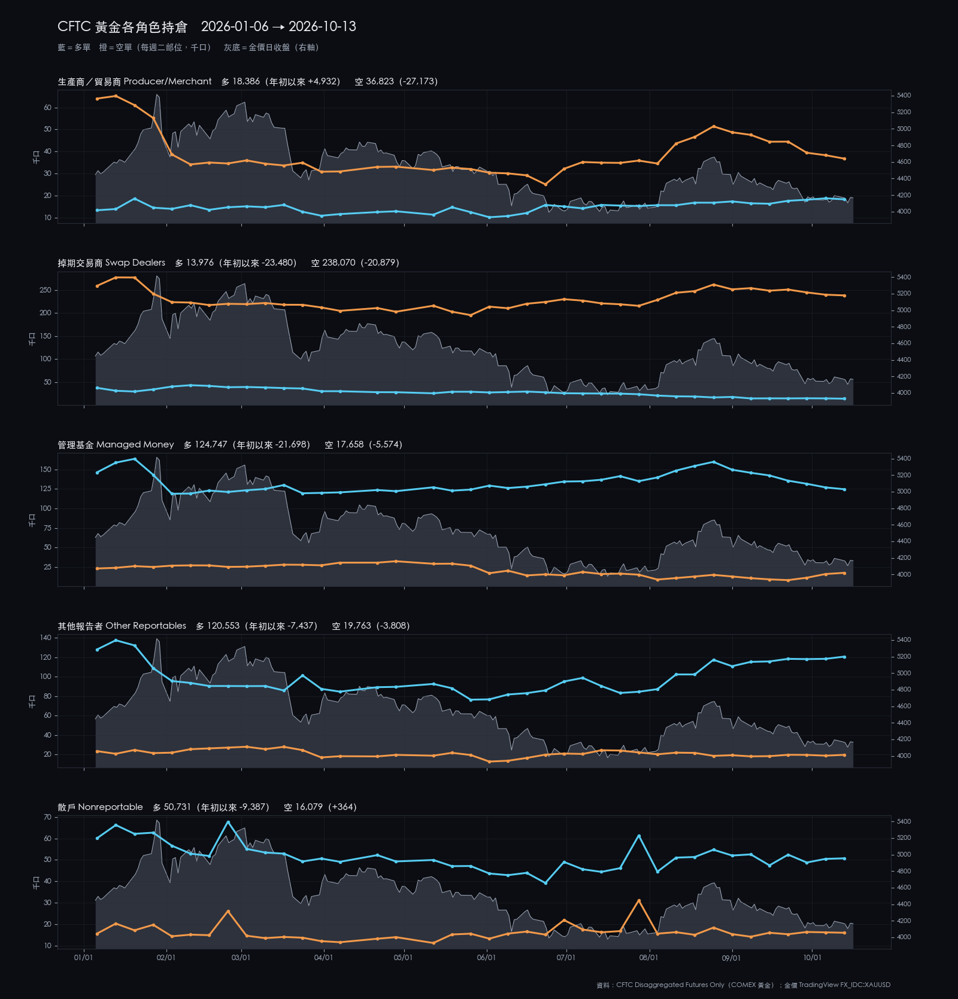
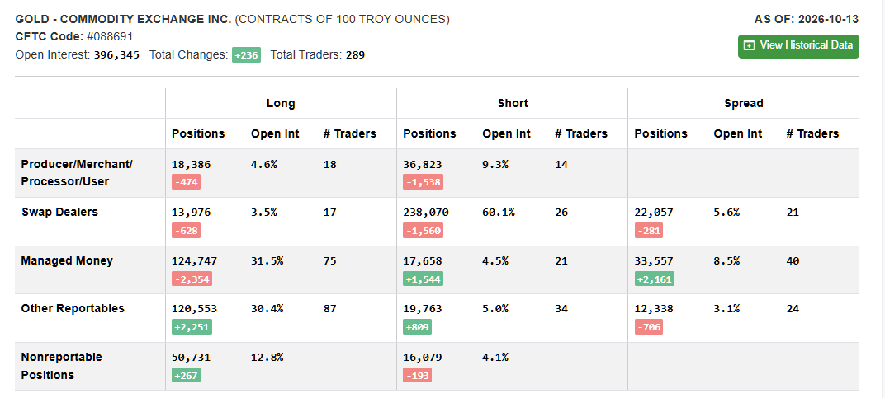

2026-W43 · Sun · 信心 medium 單一來源
XAUUSD 2026-W43 週報
兩週都在 4067–4217 之間：週三跌到 4073 後收回，週五收 4165，週線小跌。
本週建議 觀望：區間內等 S2，4h 站上 4234 才追多
資料截止：2026-10-16T20:30:00+00:00
關鍵價位

| 4,217.19–4,234.00 | 阻力 | 上方阻力 | 4h 收盤站上 4234 才算突破 |
|---|---|---|---|
| 4,198.94–4,207.54 | 阻力 | 週內高點群 | 衝到這裡不追多，看能否收上 |
| 4,146.99–4,160.58 | 樞紐 | 4h 中軌平台 | 守住維持區間中段；S2 第一候選 |
| 4,095.25–4,105.22 | 支撐 | 週中跌破點 | 4h 收破 4095 轉向跌破劇本 |
| 4,066.58–4,073.49 | 支撐 | 兩週雙底 | 跌破劇本的目標；跌破即弱勢延續 |
劇本
| 整理 | 50% | 在 4067–4234 之間來回，等 FOMC | — |
|---|---|---|---|
| 偏多 | 25% | 4h 站上 4234 後上看 4254 | 4,234.00 |
| 偏空 | 25% | 4h 收破 4095 後下看 4067–4073 | 4,095.25 |
本週看什麼
- 4199–4208 與 4217–4234 兩層阻力
- 4067–4073 雙底守不守得住
- 下週 FOMC（10/29 02:00）前的波動
S1／S2
| S1 V3.9 | wait | 不追：觸發點 4190 緊貼 4199–4208；站上 4234 後再看 |
|---|---|---|
| S2 V3.2 | wait | B 級：等 4147–4161 或 4067–4073 出現正式錘頭 |
事件
| 2026-10-17 12:00 | Fed 官員談話：W43 行事曆無排程；FOMC 會前靜默期 10-17 起 | 不適用。Board 行事曆 10-16 至 10-31 沒有演講或作證，只有統計發布與 FOMC 會議。靜默期 10-17 至 10-29 列在 Fed 的靜默期行事曆；開始時間依 FOMC 對外溝通規則（會議前第二個週六 00:00 美東＝台北 12:00）；靜默期適用所有 FOMC 參與者，包括今年有投票權的地區聯儲主席，各地區聯儲網站未逐一查核。 |
|---|---|---|
| 2026-10-20 20:30 | 美國 9 月新屋開工與建築許可（Census） | 非 POLICY 列舉事件；（判斷）低至中影響，無評級量表。 |
| 2026-10-20 22:00 | 美國 9 月各州就業與失業（BLS） | （判斷）低影響，列出以求完整。 |
| 2026-10-21 22:00 | 美國第三季週薪（BLS Usual Weekly Earnings） | （判斷）低影響，列出以求完整。 |
| 2026-10-29 02:00 | FOMC 會議聲明（10/27–28；下週，W44） | 不在 W43；預告。聲明 02:00、主席記者會 02:30（台北）。同日 20:30 另有 BEA 第三季 GDP 與 9 月 PCE（POLICY 列舉事件）。（判斷）聲明前 1 小時不新進場，下週週報再評估。 |
上週回顧
- 週三跌破 4103，最低 4073.49，隔天收回
- 週五衝到 4198.94 回落，週收 4165.18（−0.69%）
- DXY 週收 101.78，從週高 102.95 回落
| 2026-W39 | 4,379 | 4,383.343 | 4,244.38 | 4,284.13 | -2.17% |
|---|---|---|---|---|---|
| 2026-W40 | 4,285.1 | 4,286.2 | 4,110.898 | 4,142.75 | -3.32% |
| 2026-W41 | 4,136.5 | 4,207.54 | 4,066.58 | 4,194.145 | +1.39% |
| 2026-W42 | 4,194.8 | 4,217.19 | 4,073.49 | 4,165.175 | -0.71% |
CFTC
大戶淨多連七週下降；年初以來大戶多單與生產商空單都大減（判斷：兩邊一起收縮）。
持倉反映的是建立它的那一週，不能預測下一週；看研究結論 →

CFTC 原始截圖（2026-10-13）

展開看細節：價位依據、劇本完整條件、市場摘要、證據限制
市場摘要
W42 收 4165.175，週開 4194.80，對 W41 週收 −0.69%，收在週區間 63.8% 處。週一衝到 4217.19 後回落；週三 4h 收破 4095 至 4073.49，第三根 4h 收回；週五高 4198.94 後收 4165。連兩週在 4066.58–4217.19 之間。價格在 4h EMA50 之上、4h EMA200 與 1d EMA50／EMA200 之下。DXY 週收 101.779，自週高 102.945 回落，黃金與美元同週下跌。
價位依據
| 上方阻力 | 4217.19–4234.00 | 實際成交價：W42 週高 4217.19（10-12）、W40 週五高 4227.85（10-02）。計算值：4h EMA200 4234.00（200 根 4h 收盤指數平均）。 帶寬 16.81 點，約 0.54 根 4h ATR（31.37）。三週內有 4 個交易日的高點進入 4207 以上（09-30 4219.29、10-02 4227.85、10-09 4207.54、10-12 4217.19；以「高點 ≥ 4207」計，執行者選定），都在 4228 之下收回，4h EMA200 正好壓在上緣；上緣是 4h 收盤的突破確認線。（以 ATR 衡量帶寬是執行者選定的描述方式，未經核准。） |
|---|---|---|
| 週內高點群 | 4198.94–4207.54 | 實際成交價：10-16 日高 4198.94、10-13 日高 4200.51、W41 週高 4207.54（10-09）。計算值：4h 布林上軌 4201.29（20 根 4h 收盤平均 4148.27 加兩倍標準差）。 帶寬 8.60 點，約 0.27 根 4h ATR；本週兩次上攻（週二、週五）都停在這裡，並與 4h 布林上軌重疊。（判斷）先過這層才談上方阻力。（以 ATR 衡量帶寬是執行者選定的描述方式，未經核准，下同。） |
| 4h 中軌平台 | 4146.99–4160.58 | 實際成交價：10-13 日低 4146.99、10-16 日低 4147.41。計算值：4h 布林中軌 4148.27（20 根 4h 收盤簡單平均）、4h EMA50 4160.58（50 根 4h 收盤指數平均）。 帶寬 13.59 點，約 0.43 根 4h ATR。兩個日低與 4h 中軌在 1.3 點內，週五回落也在 4147–4156 收住；週收 4165.18 在帶上緣之上 4.6 點。 |
| 週中跌破點 | 4095.25–4105.22 | 計算值：4h 布林下軌 4095.25（4h 中軌 4148.27 減兩倍標準差）。實際成交價：10-15 日低 4100.14、10-14 日收 4105.22、W41 週四日低 4103.48。 帶寬 9.97 點，約 0.32 根 4h ATR。週三 4h 收破（10-14 18:00 收 4088.18）後第三根收回；上週 10-07 只是盤中掃到 4066.58、4h 收盤 4098.19 仍在帶內。（判斷）再一次 4h 收破，可信度會比這次高。 |
| 兩週雙底 | 4066.58–4073.49 | 實際成交價：W41 週低 4066.58（10-07）、W42 週低 4073.49（10-14，日線；4h 為 4073.20）。 帶寬 6.91 點。連兩週在這裡止跌、都在當週收回，是兩週區間的下緣；下方 1d 布林下軌 4044.88（計算值）距下緣 21.70 點。 |
劇本完整條件
| 整理 | 50% | 價格在兩週雙底 4066.58–4073.49 與上方阻力 4217.19–4234.00 之間往復，沒有 4h 收盤跌破 4095.25 後延續，也沒有 4h 收盤站上 4234.00。（以 4h 收盤為確認是報告作者選定的判斷規則） | 4h 收盤站上 4234.00，或 4h 收盤跌破 4095.25 且下一根未收回（「下一根」為執行者選定的確認方式，未經核准）。 | 區間內往復：上看 4198.94–4207.54 的反應，下看 4146.99–4160.58 與 4095.25–4105.22。 |
|---|---|---|---|---|
| 偏多 | 25% | 4h 收盤站上 4234.00（4h EMA200，上方阻力帶上緣），回踩不破 4217.19（帶下緣）。 | 站上後 4h 收盤跌回 4217.19 之下。 | 第一目標 4254.35（1d EMA50，計算值）；其上 4282.10（W40 留下的看跌缺口上緣，未逐根重算）。 |
| 偏空 | 25% | 4h 收盤跌破 4095.25（4h 布林下軌，週中跌破點下緣），之後 3 根 4h 內無法收回 4105.22（3 根為執行者選定的觀察窗，未經核准）。 | 跌破後 4h 收盤重新站回 4146.99（4h 中軌平台下緣）之上。 | 第一目標 4066.58–4073.49（兩週雙底）；跌破後看 4044.88（1d 布林下軌，計算值）。 |
轉折條件
4h 收盤站上 4234.00，或 4h 收盤跌破 4095.25 且下一根未收回——任一發生即脫離區間劇本，屆時以 live 結構重新評估。
S1／S2 完整條件
| S1 V3.9 | 條件式，且要求 live 正式 V3.9 訊號。30m 布林上軌 4189.90 距最後收盤 24.89 點，觸發點在週內高點群 4198.94–4207.54 下方約 9 點，到 4234 約 44 點，空間小於 2R。條件式預評等級為「—」（不建議）；4h 站上 4234 之後的訊號才有延伸空間。S1 正在預註冊前測，觸及停損門檻即暫停推薦。 | 固定停損：成交價下方 25 點。 | 固定口數與固定停損（細節見密碼頁）；同時只持一個部位。 |
|---|---|---|---|
| S2 V3.2 | 等待價格回測 4146.99–4160.58 或 4066.58–4073.49 並出現正式 V3.2 錘頭訊號；報告作者建議 4h 收破 4095.25 後不在 4095 與 4073 之間接刀（非策略規則）。條件式預評等級為 B。 | 固定停損：成交價下方 25 點；TP1 50 點、TP2 100 點。 | 固定口數與固定停損（細節見密碼頁）；同時只持一個部位。S2 不高於 S1；每週最多 2 次實際進場，週一重置。 |
CFTC 完整數字
本報告 CFTC 段落的原始判讀依據（AS OF 2026-10-13，週二持倉，不含週三的 4073 低點與週五反彈）。可對照本圖核對：未平倉 396,345（+236）；Managed Money 多 124,747（−2,354）、空 17,658（+1,544），淨多 107,089，連七週下降；Producer/Merchant 空單 36,823（−1,538）；散戶（Nonreportable）淨多 34,652（+460）。以上僅作描述，不作方向訊號。Commitments of Traders 由 cftc.gov 免費公布，屬美國公有領域資料；本圖只含部位統計，不含任何帳戶、持倉或身分資訊。
證據限制
- 本期僅一份合格報告（另一 producer 暫停中），為單一來源；方向判斷沒有交叉檢驗。
- 本報告的覆核由同一個模型在無建構記憶的情況下執行，不是獨立檢驗：範圍僅限可比對的契約遵循，不涵蓋判斷。
- CFTC 部位與各角色年初至今圖僅作背景描述，不作方向訊號；研究總覽中相關的「研究方向」結論強度皆為 weak、未通過家族校正。原圖附於本頁供讀者核對。
- 價位圖的成交量分布以 COMEX 微型黃金期貨（MGC）成交量換算現貨價位，只作參考；過去研究顯示成交量無法區分 S1／S2 的勝負，因此不作為價位或進場條件。
- GVZ、10 年期公債殖利率、通膨預期與波動率指標的來源資料自 2026-06-18 起未更新，完整即時 Macro 判定為 unknown。
- 來源比較共 10 組：4 組 similar、6 組 review（XAUUSD 30m 端點落差、XAUUSD 4h 數值差、DXY 日線與週線差異等）。正式點位一律採人工匯出。
- 公開版本不揭露帳戶部位或交易日誌內容。
研究證據，非投資建議。所有 Entry／SL 皆為條件式，實際執行前必須以 live TradingView 重新確認訊號與價格；最終決定屬於帳戶擁有者。